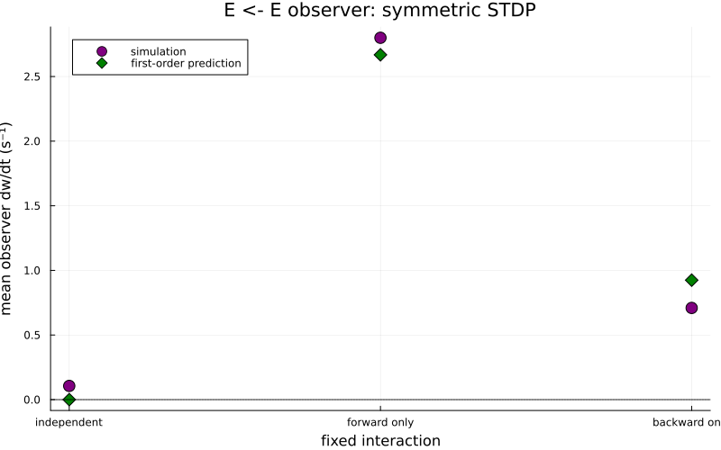
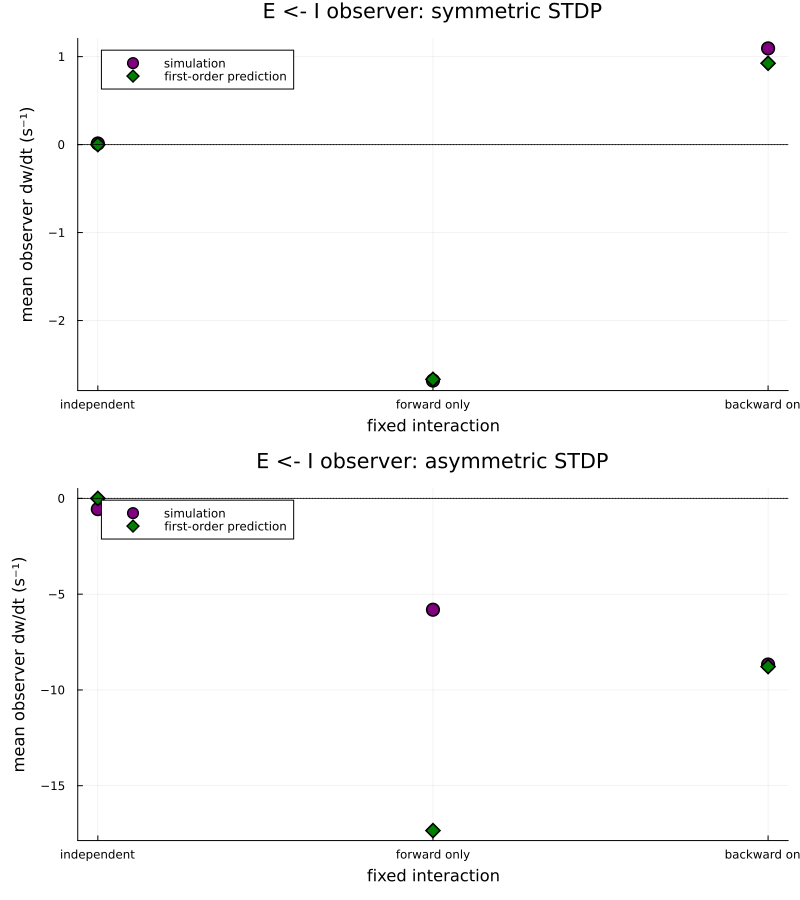
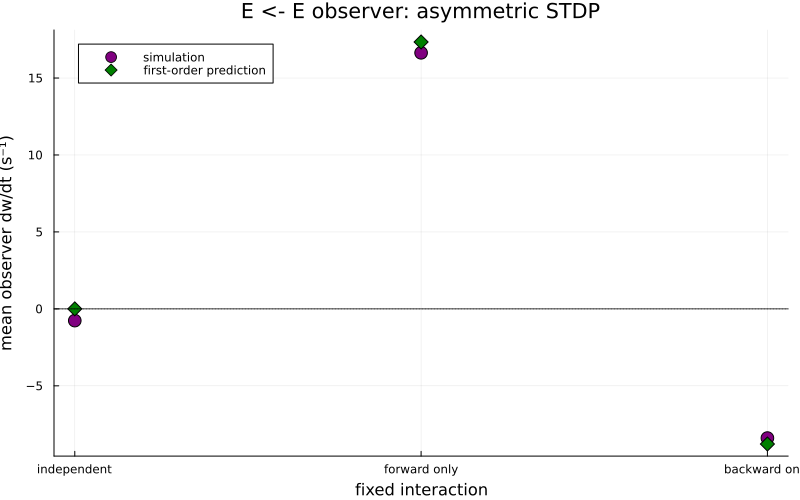

Testing plasticity predictions with two-neuron motifs
This example checks first-order predictions for plastic-weight drift against simulations of two-neuron Hawkes networks. The plastic connection observes the pre- and postsynaptic spikes through ConnectionNonInteracting, so its weight changes without affecting either neuron's rate. Separate fixed connections create the correlations whose contribution we want to measure.
In the package's post <- pre convention, each network can contain:
- a forward fixed connection,
post <- pre; - a backward fixed connection,
pre <- post; and - a non-interacting plastic observer,
post <- pre.
We compare independent neurons, a forward-only interaction, and a backward-only interaction. This isolates the first-order motif coefficients M10 and M01.
Setup
using Random
using Statistics
using Plots
using HawkesPlasticNetworks
global const H = HawkesPlasticNetworks
rate_pre = 17.0
rate_post = 55.0
kernel_pre = 0.1
kernel_post = 0.3
learning_rate = 0.7345
rate_product_bias = 0.0
rate_term_pre = 0.0
rate_term_post = 0.0
plasticity_timescale = 0.08
timing_scale = 2.0
initial_observer_weight = 100_000.0
recording_interval = 30.0
simulation_duration = 10_000.0
warmup_duration = simulation_duration/3;Each case contains at most one fixed interaction. The backward weight is smaller because the prescribed presynaptic rate is lower; this keeps the external inputs nonnegative.
interaction_cases = (
(label="independent",weight_post_pre=0.0,weight_pre_post=0.0),
(label="forward only",weight_post_pre=0.5,weight_pre_post=0.0),
(label="backward only",weight_post_pre=0.0,weight_pre_post=0.2),
);Constructors make the choice of neuron and plasticity type explicit at each call site. The pre_sign argument is 1 for an excitatory presynaptic neuron and -1 for an inhibitory one.
function measure_motif_drift(
interaction_case,
make_pre_population,
make_plasticity,
pre_sign::Integer;
seed::Integer)
Random.seed!(seed)
population_pre = make_pre_population()
population_post = H.PopulationExpKernelExcitatory(
1,kernel_post;label="post_$(seed)")
connection_post_pre = H.ConnectionWithWeights(
population_post,fill(interaction_case.weight_post_pre,1,1),
population_pre)
connection_pre_post = H.ConnectionWithWeights(
population_pre,fill(interaction_case.weight_pre_post,1,1),
population_post)
observer_weights = fill(initial_observer_weight,1,1)
plasticity = make_plasticity(observer_weights)
observer_connection = H.ConnectionNonInteracting(
population_post,observer_weights,population_pre;
plasticity_rules=(plasticity,))
input_pre = rate_pre-interaction_case.weight_pre_post*rate_post
input_post = rate_post-
pre_sign*interaction_case.weight_post_pre*rate_pre
if input_pre < 0.0
error("The backward interaction requires a negative external input")
end
if input_post < 0.0
error("The forward interaction requires a negative external input")
end
connected_pre = H.ConnectedPopulationExpKernel(
population_pre,[input_pre],
(connection_pre_post,population_post))
connected_post = H.ConnectedPopulationExpKernel(
population_post,[input_post],
(connection_post_pre,population_pre),
(observer_connection,population_pre))
recorder_weight = H.WeightMatrixRecorder(
observer_weights,recording_interval,simulation_duration)
recorder_rate_pre = H.RecorderPopulationRate(
population_pre,simulation_duration;Δt=recording_interval)
recorder_rate_post = H.RecorderPopulationRate(
population_post,simulation_duration;Δt=recording_interval)
network = H.RecurrentNetworkExpKernel(
(connected_pre,connected_post),
(recorder_weight,recorder_rate_pre,recorder_rate_post))
H.reset!(network)
H.reset!(plasticity)
time_now = 0.0
while time_now < simulation_duration
time_now = H.dynamics_step!(time_now,network)
end
weight_content = H.get_content(recorder_weight)
weight_values = vec(weight_content.weights[:,1,1])
interval_starts = weight_content.times[1:end-1]
drift_intervals = diff(weight_values)./diff(weight_content.times)
steady_state_intervals = interval_starts .>= warmup_duration
if !any(steady_state_intervals)
error("No weight intervals remain after the warmup")
end
motif_M10 = H.get_motif_coef_M10(plasticity,population_pre)
motif_M01 = H.get_motif_coef_M01(plasticity,population_post)
predicted_drift = learning_rate*(
rate_term_pre*rate_pre + rate_term_post*rate_post +
rate_product_bias*rate_pre*rate_post +
motif_M10*interaction_case.weight_post_pre*rate_pre +
motif_M01*interaction_case.weight_pre_post*rate_post)
return (
measured_drift=mean(drift_intervals[steady_state_intervals]),
predicted_drift=predicted_drift,
measured_rate_pre=mean(H.get_content(recorder_rate_pre).rates),
measured_rate_post=mean(H.get_content(recorder_rate_post).rates))
end
function measure_all_cases(
make_pre_population,
make_plasticity,
pre_sign::Integer;
first_seed::Integer)
return map(enumerate(interaction_cases)) do (case_index,interaction_case)
measure_motif_drift(
interaction_case,make_pre_population,make_plasticity,pre_sign;
seed=first_seed+case_index)
end
end
function plot_drift_comparison(results; title::String)
positions = collect(eachindex(interaction_cases))
labels = [interaction_case.label for interaction_case in interaction_cases]
measured = [result.measured_drift for result in results]
predicted = [result.predicted_drift for result in results]
drift_plot = scatter(
positions,measured;
label="simulation",color=:purple,markersize=7,
xticks=(positions,labels),xlabel="fixed interaction",
ylabel="mean observer dw/dt (s⁻¹)",title=title,
size=(800,500),legend=:topleft)
scatter!(
drift_plot,positions,predicted;
label="first-order prediction",color=:green,
marker=:diamond,markersize=7)
hline!(
drift_plot,[0.0];label=nothing,color=:black,linestyle=:dot)
return drift_plot
end
make_excitatory_pre = () -> H.PopulationExpKernelExcitatory(
1,kernel_pre;label="pre_excitatory")
make_inhibitory_pre = () -> H.PopulationExpKernelInhibitory(
1,kernel_pre;label="pre_inhibitory")
make_symmetric_rule = weights -> H.PlasticitySymmetricSTDP(
learning_rate,rate_product_bias,rate_term_pre,rate_term_post,
plasticity_timescale,timing_scale,weights)
make_asymmetric_rule = weights -> H.PlasticityAsymmetricSTDP(
learning_rate,rate_product_bias,rate_term_pre,rate_term_post,
plasticity_timescale,timing_scale,weights);Symmetric STDP with excitatory pre- and postsynaptic neurons
With B = αpre = αpost = 0, independent spike trains have zero expected drift. A forward interaction adds only
\[\eta M_{10}w_{\mathrm{post}\leftarrow\mathrm{pre}}r_{\mathrm{pre}},\]
while a backward interaction adds only
\[\eta M_{01}w_{\mathrm{pre}\leftarrow\mathrm{post}}r_{\mathrm{post}}.\]
results_ee_symmetric = measure_all_cases(
make_excitatory_pre,make_symmetric_rule,1;first_seed=100);The measured rates provide a useful check that changing the fixed motif did not change the prescribed operating point.
for (interaction_case,result) in zip(interaction_cases,results_ee_symmetric)
println(
interaction_case.label,
": pre/post rates = ",round(result.measured_rate_pre;digits=2),
" / ",round(result.measured_rate_post;digits=2),
", measured/predicted dw/dt = ",
result.measured_drift," / ",result.predicted_drift)
end
plot_drift_comparison(
results_ee_symmetric;title="E <- E observer: symmetric STDP")
#
Inhibitory presynaptic motifs
We next replace the presynaptic neuron with an inhibitory neuron. Connection weights remain nonnegative magnitudes; the population type supplies the inhibitory sign. The forward M10 contribution therefore changes sign. This sign is already part of the motif coefficient and must not be negated a second time when it is used in a fixed-point calculation.
results_ei_symmetric = measure_all_cases(
make_inhibitory_pre,make_symmetric_rule,-1;first_seed=200)
results_ei_asymmetric = measure_all_cases(
make_inhibitory_pre,make_asymmetric_rule,-1;first_seed=300);
plot(
plot_drift_comparison(
results_ei_symmetric;title="E <- I observer: symmetric STDP"),
plot_drift_comparison(
results_ei_asymmetric;title="E <- I observer: asymmetric STDP");
layout=(2,1),size=(800,900),left_margin=4Plots.mm)
#
Asymmetric STDP with excitatory neurons
Finally, we return to excitatory pre- and postsynaptic neurons and use an asymmetric timing window. Causal pre-before-post correlations contribute through M10, while anticausal post-before-pre correlations contribute with the opposite sign through M01. The forward motif therefore potentiates the observer weight and the backward motif depresses it.
results_ee_asymmetric = measure_all_cases(
make_excitatory_pre,make_asymmetric_rule,1;first_seed=400);
for (interaction_case,result) in zip(interaction_cases,results_ee_asymmetric)
println(
interaction_case.label,
": pre/post rates = ",round(result.measured_rate_pre;digits=2),
" / ",round(result.measured_rate_post;digits=2),
", measured/predicted dw/dt = ",
result.measured_drift," / ",result.predicted_drift)
end
plot_drift_comparison(
results_ee_asymmetric;title="E <- E observer: asymmetric STDP")
Across all three comparisons, finite simulations fluctuate around the analytical values, but the direction and scale of the motif-dependent drift agree with the first-order prediction.
This page was generated using Literate.jl.